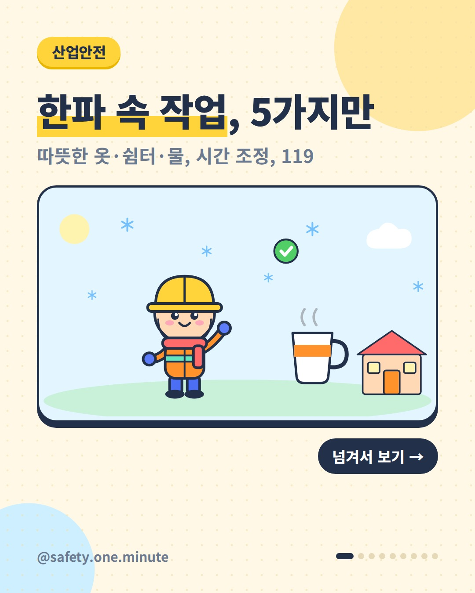
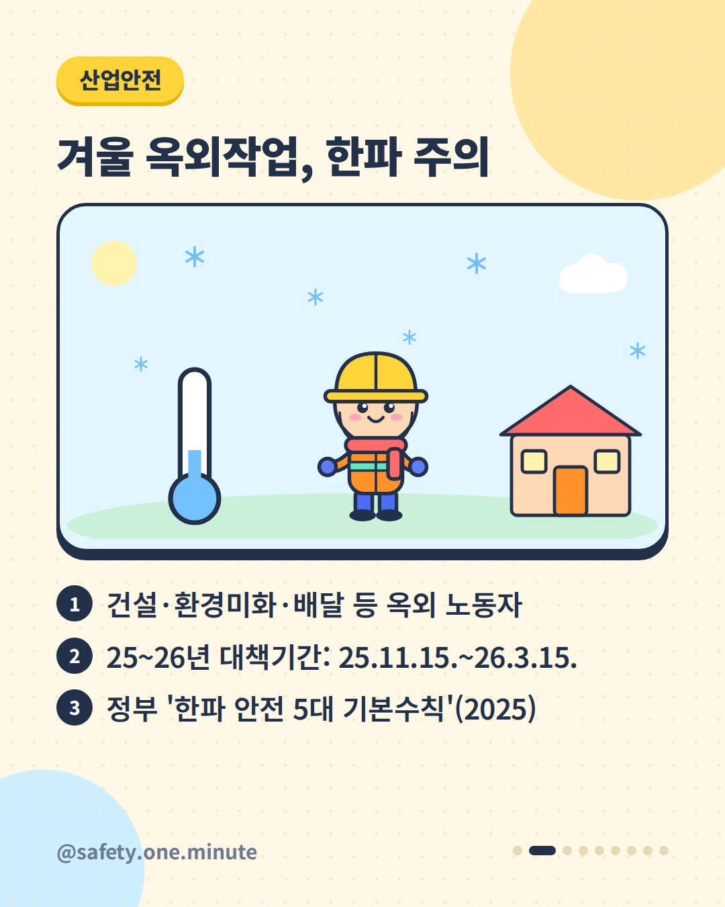
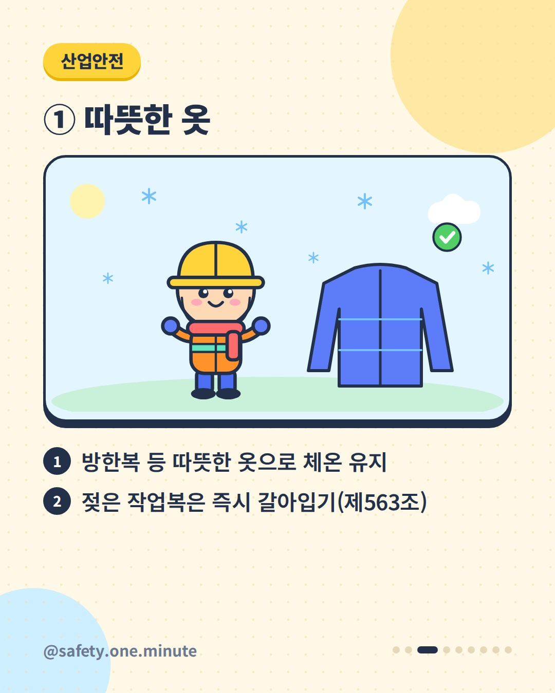
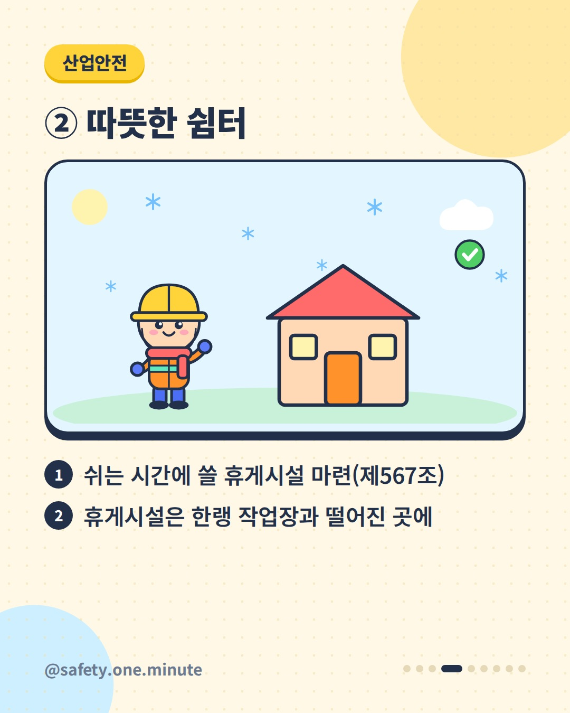
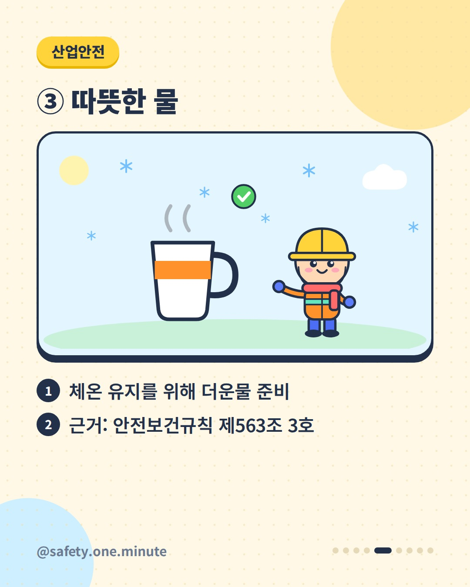
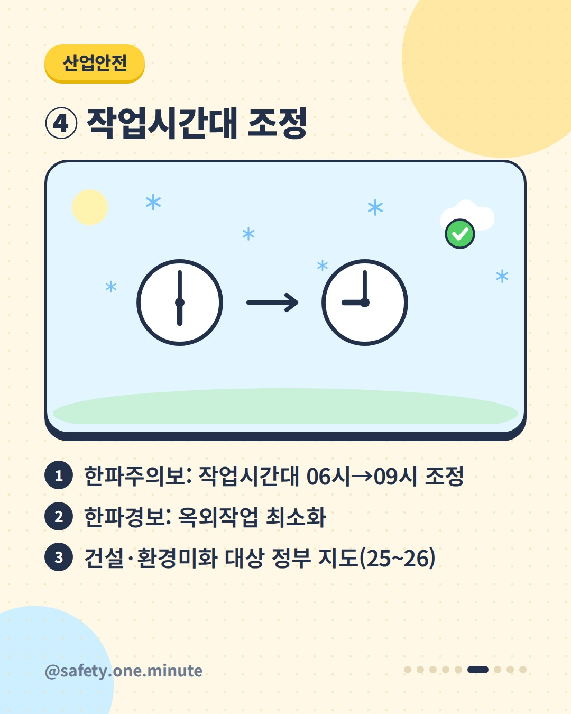
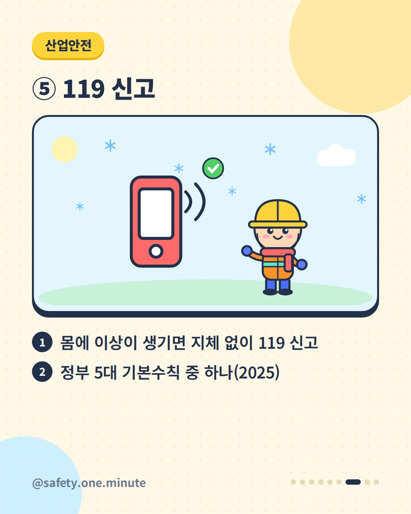
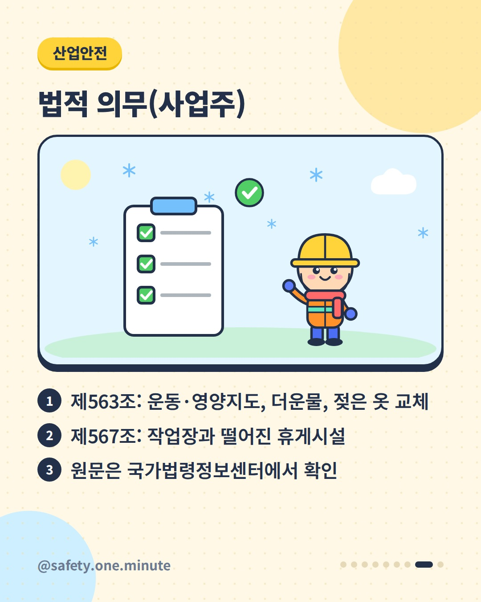
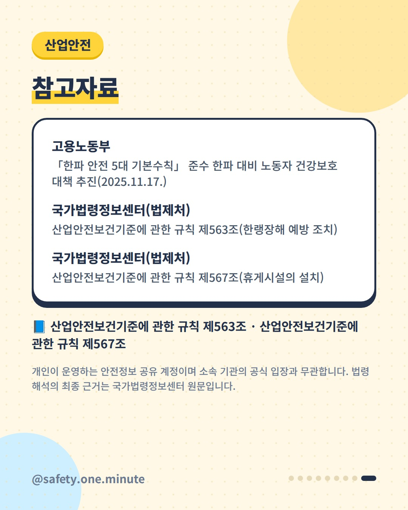

한파 속 작업, 5가지만 — 9장 (4:5)









캡션
찬바람 속에서 일하는 분들, 이 다섯 가지 기억하세요. 고용노동부는 2025~26년 겨울 한파 대책기간(2025.11.15.~2026.3.15.)에 '한파 안전 5대 기본수칙'을 지키도록 지도했습니다. ① 따뜻한 옷 ② 따뜻한 쉼터(휴식) ③ 따뜻한 물 ④ 작업시간대 조정 ⑤ 119 신고 한파주의보가 내려지면 건설·환경미화 노동자의 작업시간대를 06시→09시로 조정하고, 한파경보 때는 옥외작업을 최소화하도록 지도했습니다. 법에도 정해져 있습니다. 산업안전보건기준에 관한 규칙 제563조는 한랭작업 때 혈액순환 운동지도, 지방·비타민 영양지도, 더운물 준비, 젖은 작업복 즉시 갈아입기를, 제567조는 작업장과 떨어진 곳의 휴게시설 설치를 사업주에게 요구합니다. ※ 2026~27년 겨울 대책은 고용노동부 발표를 확인하세요. 세부 요건은 법령 원문(2025.9.1. 시행본 기준)을 확인하세요. 출처: - 고용노동부 – 한파 안전 5대 기본수칙 노동자 건강보호 대책(2025) - 국가법령정보센터(법제처) – 산업안전보건기준에 관한 규칙 제563조·제567조 개인이 운영하는 안전정보 공유 계정이며 소속 기관의 공식 입장과 무관합니다. 법령 해석의 최종 근거는 국가법령정보센터 원문입니다. #한파 #한랭질환 #옥외작업 #산업안전 #건설안전 #안전수칙